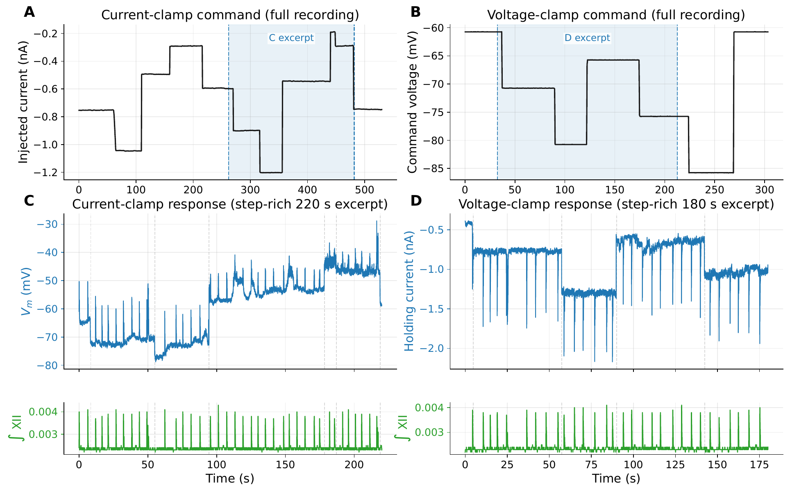
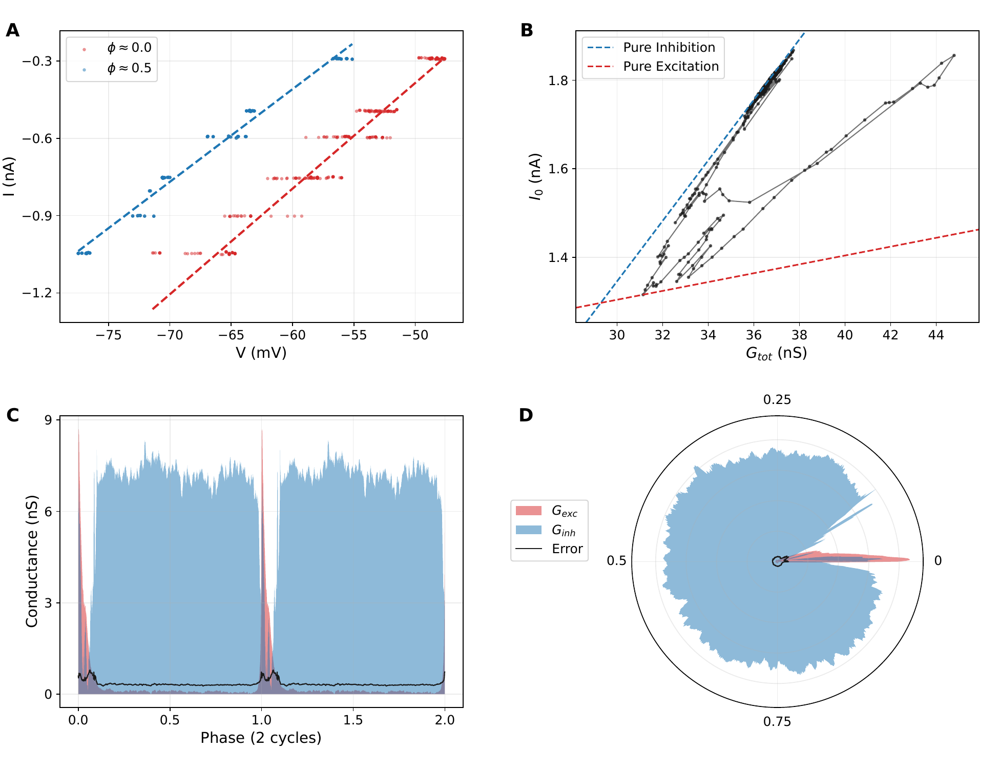
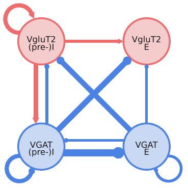
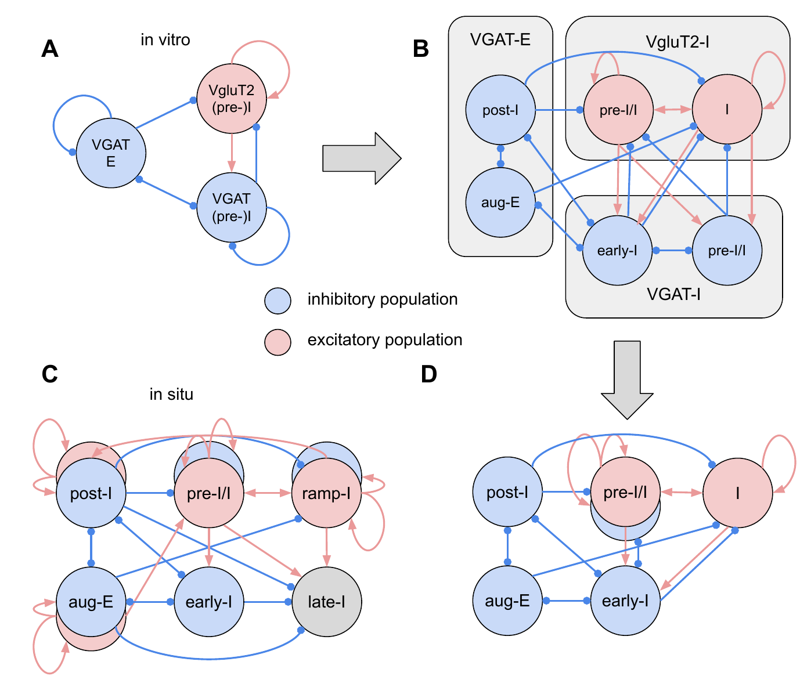

Postsynaptic recording
Intracellular current and voltage from one identified cell while the surrounding network remains active.
Synaptic Conductance Inference for Oscillating Networks
SCION is an analysis workflow for recordings from cells embedded in periodically active networks. Give it current, voltage, and a cycle reference collected while you step current or voltage. It returns excitatory and inhibitory conductance profiles over one normalized cycle.
Experimental Contract
The recorded cell sits inside a periodically active network and receives phase-locked synaptic input. SCION uses the cell as a postsynaptic sensor: perturb its membrane current or voltage, align the responses to the network cycle, and infer the conductances that best explain the observed I-V relationships.
What You Bring
The method is agnostic to whether the rhythm is spontaneous, pharmacologically maintained, or induced by stimulation. What matters is that repeated cycles can be aligned and that the recording samples enough current-voltage space to estimate a local relationship at each phase.
Intracellular current and voltage from one identified cell while the surrounding network remains active.
Current steps or voltage steps distributed across many cycles, giving the regression something to fit.
A nerve burst, stimulus trigger, population signal, or other marker that assigns each sample a phase.
Method
The algorithm does not average away the command perturbations. It uses them. For each phase of the cycle, samples collected at different command levels form a small I-V experiment inside the ongoing network rhythm.

Step 01
Current-clamp and voltage-clamp files provide the same ingredients: a current coordinate, a voltage coordinate, and a cycle reference. SCION uses the full accepted interval rather than treating each step as a separate experiment.
Inference Geometry
Samples with the same normalized phase are pooled across cycles and command levels. SCION fits I = GtotV + I0 in each bin, so the changing slope reports total conductance and the changing intercept reports the phase-dependent current offset.
The fitted slope-intercept trajectory forms a wedge. Its envelope estimates the inhibitory boundary for that recording; with the excitatory reversal fixed, the mixed synaptic drive separates into Gexc/gleak and Ginh/gleak.

Fit Checklist
The method was developed for respiratory CPG preparations, but its real target is broader: periodically active networks where synaptic input to a recorded cell can be sampled repeatedly at different command levels.
Respiration As Testbed
The point is not that SCION belongs only to respiration. Respiration is a demanding validation arena: the network is rhythmic, the postsynaptic inputs are mixed, and the preparation can be compared across intact and reduced circuit states.
Published method paper
Molkov and colleagues introduced the technique in mature rat brainstem-spinal cord recordings, using respiratory motor outputs as phase references to infer excitatory and inhibitory conductance profiles in active respiratory microcircuits.
Read eLife RP101959This repository
This site exposes the same inference workflow on VgluT2 and VGAT whole-cell recordings from neonatal mouse slices. The dashboard keeps every accepted and rejected recording visible, including parameters, snapshots, cycle counts, and conductance summaries.
Open the audit trailTransferable idea
Replace XII or phrenic activity with your own phase marker: stimulation pulse, population activity, motor output, imaging trace, or another clock. If the cell receives repeatable phase-locked synaptic drive, SCION gives you a way to ask which conductance carries it.
git clone https://github.com/ymolkov/synaptic-inputs-slices
cd synaptic-inputs-slices
make analysisWhat This Repo Shows
The generated figures and dashboard are not decorative summaries. They are the audit path from command protocol to single-cell profile to population-level circuit interpretation.

Biological Readout
In this worked example, inspiratory VgluT2 cells carry the excitatory kernel, VGAT expiratory cells provide tonic expiratory inhibition, and VGAT inspiratory cells add phasic inhibition near the inspiratory burst.
Preparation Matters
The in situ paper uses the method to resolve a richer respiratory CPG organization. The slice study uses the same conductance logic to expose the reduced circuit retained in an isolated preparation. That contrast is the advertisement: SCION is useful because it separates method from preparation.

Dashboard
Browse all recording-level outputs: command mode, cycle count, accepted/rejected status, inferred parameters, source files, thumbnails, and full-resolution analysis snapshots.
How to Cite
The conductance inference technique was introduced and validated in the eLife method paper. The slice study below applies it to genetically identified preBötC populations.
Method paper
Molkov YI, Borgmann A, Koizumi H, Hama N, Zhang R, Smith JC. Inference technique for the synaptic conductances in rhythmically active networks and application to respiratory central pattern generation circuits. eLife 13:RP101959 (2025).
doi.org/10.7554/eLife.101959Slice study (this site)
Molkov YI, Koizumi H, Smith JC. Synaptic architecture of the preBötzinger Complex inferred from conductance profiling of genetically identified VgluT2 and VGAT neurons. Manuscript in preparation; preprint forthcoming on bioRxiv.
bioRxiv (placeholder until preprint posted){kind=link}
{kind=link}
{kind=link}
{kind=link}